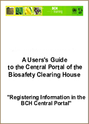

En este módulo usted aprenderá sobre la creación y gestión de información en el CIISB a través del centro de gestión del Portal Central.
-
Acceder al Centro de Gestión de CIISB.
-
Administrar información en el Centro de Gestión del CIISB.
-
Usar el buzón virtual.
-
Administrar su carpeta personal.
-
Administrar usuarios.
Contexto
En el marco del Proyecto PNUMA-FMAM de Creación de Capacidad para una Participación Eficaz en el Centro de Intercambio de Información sobre Seguridad de la Biotecnología (CIISB), en colaboración con la CDB, se ha preparado un paquete modular de capacitación cuyo objetivo es servir de guía práctica de conocimientos técnicos para ayudar a los países a conocer, comprender y usar el CIISB, así como a implementar el acceso nacional al mismo. Este paquete de capacitación está diseñado de manera flexible y puede ser adaptado para contemplar las diversas necesidades de los distintos países, permitiendo a cada país elegir las herramientas e ideas que más se ajusten a su situación, requerimientos y prioridades. El paquete de capacitación está organizado en varios módulos, cada uno de los cuales aborda un elemento del Centro de Intercambio de Información sobre Seguridad de la Biotecnología (CIISB), y se puede encontrar en el Portal Central del CIISB (http://bch.cbd.int/help/topics/es/webframe.html?Home.html, bajo el libro "Materiales de Entrenamiento").
Público
El objetivo de este módulo es orientar a los usuarios del Centro de Intercambio de Información sobre Seguridad de la Biotecnología (CIISB). Está pensado para un público no técnico, con escaso o nulo conocimiento del Protocolo de Cartagena y del CIISB, pero que necesite ingresar, acceder y utilizar datos o instalar componentes de TI del CIISB. Las funciones de usuarios del Centro de Gestión del CIISB están restringidas a usuarios que tienen un nivel particular de acceso: Puntos Focales Nacionales (PFN) y personas autorizadas para el ingreso de datos.
Propósito
En este módulo se muestra cómo es el proceso para registrar información en línea, usando el Centro de Gestión del Portal Central, el cual permite a los gobiernos administrar su información directamente en las bases de datos del CIISB. Los usuarios pueden usar estas bases de datos, que son el componente medular del CIISB, para registrar información requerida en virtud del Protocolo de Cartagena.
También se puede registrar información fuera de línea, siempre y cuando se usen los formatos comunes para presentar la información. Una vez completados, los documentos se pueden enviar por:
Correo electrónico: Correo electrónico a la Secretaría a la dirección bch@cbd.int
Fax: Fax a la Secretaría al número +1 514-288-6588